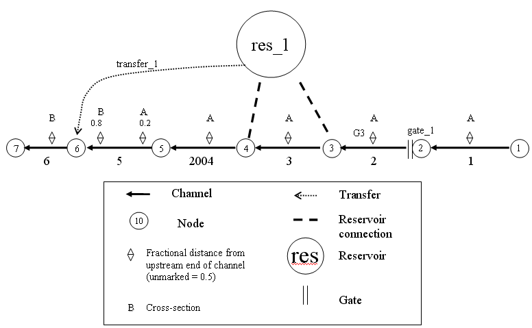
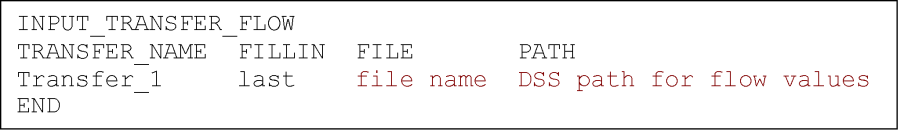
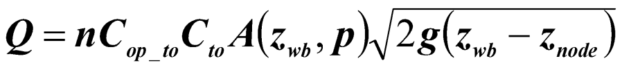

Tutorial 2: Reservoirs, Gates, Transfers
Task
Add reservoirs, gates and object to object flow transfers to the simple
channel grid created in tutorial 1
Skills Gained
- Understanding of how reservoirs and gates are represented in DSM2
-
Learn how to transfer flow from one reservoir or node to another reservoir or node in DSM2
The purpose of this tutorial is to learn how to add reservoirs, gates, and flow transfers to the simple channel-only grid created in Tutorial 1 (Figure 1). The grid we are going to create has the following configuration and specifications: The channel portion is identical to the simple channel model from Tutorial 1. Note that each tutorial is self contained, so it is not necessary to do Tutorial 1 before completing this tutorial.

Figure 1- Simple channel with a new reservoir, gate, and flow transfer.
The following steps will instruct you on how to create these new features and add them to the simple channel system.DSM2 Definitions
Reservoir
In DSM2, reservoirs are open bodies of water that store flow and are connected to nodes by means of an energy-based equation. This means that flow moves between the reservoir and its connected node or channel whenever there is an energy imbalance (e.g. stage difference). Reservoirs are considered instantly well-mixed. The Reservoirs Table specifies the identity and physical properties of the reservoir. Connections to nodes are specified in the Reservoir Connections table. If it is desired to regulate flow between a reservoir and its connected node or channel, a gate device is used.
In DSM2 applications for the Delta, reservoirs are used for actual reservoirs such as Clifton Court Forebay and for open water bodies such as flooded islands.
Gate
In DSM2, gates are sites that present a barrier or control on flow. A gate may have an arbitrary number of associated hydraulic devices (pipes and weirs), each of which may be operated independently to control flow.
In DSM2 applications for the Delta, gates are used to represent the Delta Cross Channel, the Montezuma Slough Salinity Control Gates, and permanent or temporary barriers.
Object to Object Flow Transfer
Transfers are direct water connections from a reservoir or node to another reservoir or node. Transfers are instantaneous movements of water (and its constituents and particles) without any detailed description of physics or storage. The Transfer table specifies the connectivity of the transfer.
In DSM2 applications for the Delta, object to object transfers have been used to represent proposed peripheral canal withdrawal and outflow locations. -
Create the reservoir:
- In Windows Explorer, navigate to the
directory: \{DSM2_home}\tutorial\simple\t2_reservoir_gate_transfer.
- Open hydro.inp. At the bottom of the file, Add the skeleton for the reservoir table:
- In Windows Explorer, navigate to the
directory: \{DSM2_home}\tutorial\simple\t2_reservoir_gate_transfer.
RESERVOIR
NAME AREA BOT_ELEV
END
-
- Enter the following values into the appropriate fields:
1. Name: res_1
2. Area (million sq ft): 40
3. Bottom elev (ft): -24 - Note from Figure 1 that the reservoir has two connections; one
at Node 3, and one at Node 4. These will go in a child table
called RESERVOIR_CONNECTION.
 Some DSM2 input data tables are
related to each other in what is referred to as a parent/child
relationship. In the case of reservoirs, the RESERVOIR table is
the parent table and the RESERVOIR_CONNECTIONS table is the
child table that provides additional information related to the
information in the parent table. The parent table must appear in
the input file prior to the child table. The header has the
following form:
Some DSM2 input data tables are
related to each other in what is referred to as a parent/child
relationship. In the case of reservoirs, the RESERVOIR table is
the parent table and the RESERVOIR_CONNECTIONS table is the
child table that provides additional information related to the
information in the parent table. The parent table must appear in
the input file prior to the child table. The header has the
following form:
- Enter the following values into the appropriate fields:
RESERVOIR_CONNECTION
RES_NAME NODE COEF_IN COEF_OUT
END
-
- Enter the following values into the appropriate fields for the
first connection:
1. Res Name: res_1
2. Node: 3
3. Res Coef (in): 200
4. Res Coef (out): 200 - Enter the following values into the appropriate fields for the
second connection:
- Res Name: res_1
- Node: 4
- Res Coef (in): 200
- Res Coef (out): 200
- Res Name: res_1
- Save the current settings.
- Enter the following values into the appropriate fields for the
first connection:
 To ensure conservation of mass at the beginning of a DSM2 simulation,
it is good practice to set appropriate initial conditions. It is
recommended to set all flows to zero and reservoir stage to zero.
To ensure conservation of mass at the beginning of a DSM2 simulation,
it is good practice to set appropriate initial conditions. It is
recommended to set all flows to zero and reservoir stage to zero.
- Add Initial Conditions for the Reservoir:
- Create the Reservoir Initial Conditions table:
- The header and data are
- Create the Reservoir Initial Conditions table:
RESERVOIR_IC
RES_NAME STAGE
res_1 0.0
END
- Create the Gate:
- Now we are going to create the GATE table and its child table
GATE_DEVICE. Note from Figure 1 that the gate is located at Node
2 of Channel 2. This gate consists of both a weir and a pipe.
Therefore, two rows of information will be needed for
the GATE_DEVICE table.
- At the bottom of hydro.inp, add the skeleton for the GATE table:
- Now we are going to create the GATE table and its child table
GATE_DEVICE. Note from Figure 1 that the gate is located at Node
2 of Channel 2. This gate consists of both a weir and a pipe.
Therefore, two rows of information will be needed for
the GATE_DEVICE table.
GATE
NAME FROM_OBJ FROM_IDENTIFIER TO_NODE
END
-
- In the Gates table:
1. Add a row and enter the following values into the appropriate fields:
1. Name: gate_1
2. From object: channel
3. From identifier: 2 [note that this 2 refers to channel 2]
4. to Node: 2 [note that this 2 refers to node 2]
2. Create a GATE_WEIR_DEVICE table with the following fields:
- In the Gates table:
GATE_NAME, DEVICE, NDUPLICATE, WIDTH, ELEV, HEIGHT, CF_FROM_NODE,
CF_TO_NODE, DEFAULT_OP
-
Enter the following values into the appropriate fields:
- Gate Name: gate_1
- Device: weir
- NDuplicate: 2
- Width: 20
- Elev: 2
- Height: 9999.0
- CF from Node: 0.8
- CF to Node: 0.8
- Default Op: gate_openNote: don't forget to close your
table with END.
 How many weirs does this gate have?
How many weirs does this gate have?
Hint: check out the value for number of duplicates
- Gate Name: gate_1
-
Create a GATE_PIPE_DEVICE table by looking up the appropriate headers in the DSM2 documentation.
All
table headers have to be in capital letters.-
Again, in the Gate Devices table:
- On a new line enter the following values into the
appropriate fields:
- Gate Name: gate_1
- Device Name: pipe
- Number of duplicates: 2
- Radius: 2
- Elevation: 2
- Flow coefficient from Node: 0.8
- Flow coefficient to Node: 0.8
- Default Operation: gate_open
- Gate Name: gate_1
- On a new line enter the following values into the
appropriate fields:
-
Save the current settings.
How would you change the gate device
table to only allow flow in one direction? Hint: review gate
operation options in the documentation.
-
-
Create the Transfer:
A transfer is a momentum-free transfer of water from one node or reservoir to another node or reservoir. We are going to create a continuous transfer of 40cfs of water from the reservoir res_1 to node 6.
- Below the gate input, create the TRANSFER table
- The headers are:
TRANSFER
NAME FROM_OBJ FROM_IDENTIFIER TO_OBJ TO_IDENTIFIER
END
-
Enter the following values into the appropriate fields:
1. Name: transfer_1
2. From Object: reservoir
3. To identifier: res_1
4. To Object: node
5. To identifier: 6- Save the current settings.
-
Add the Transfer Flow Time Series:
We have created the transfer physically, but we have not assigned it a flow. This is done on a separate table, so that the specifications of the transfer can be used with different operations or hydrologies. Flow will be 40cfs.
- In hydro.inp, create the Transfer Time Series table:
- The headers are:
INPUT_TRANSFER_FLOW
TRANSFER_NAME FILLIN FILE PATH
END
-
Enter the following values into the appropriate fields:
1. Input Name: transfer_1
2. Fillin: last
3. Input File: constant
4. Path/Value: 40- Save the current settings.
 How would you change the flow transfer from a constant value to a time
varying value?
How would you change the flow transfer from a constant value to a time
varying value?

Note: the values shown in the last two columns are descriptions of the information that would go in that field; they are not actual field values. See Basic Tutorial 4 for more information on using time series data in DSM2.-
Running HYDRO and QUAL
-
In Windows Explorer, navigate to the directory: _
Unknown macro: {DSM2_home}tutorialsimple{_}.
2. Right-click on the directory, t2_reservoir_gate_transfer, and select Open Command Window Here.
3. In the command window, type: hydro hydro.inp.
4. In the command window, type: qual qual.inp.
5. Open the output.dss file in the t2_reservoir_gate_transfer directory, and examine the results.
-
-
Brain teasers
-
The equation for inflow from a node to a reservoir through a gate is as follows:

Lookup the equation for a reservoir connection in the documentation. Write it down next to the gate equation. Assuming they both represent the same basic orifice physics, what terms in the gate equation does the reservoir coefficient C lump together?
2. Clifton Court Forebay has five duplicate radial gates connecting it to the surrounding channel. Each has a crest elevation of -10.1ft and a width of 20ft:
1. If water is at 0 ft and the five gates are open, what is the area exposed to flow?
2. If the weirs are perfectly efficient (no loss, coefficients of 1.0), what would be the equivalent "lumped" reservoir coefficient for these gates?
3. DSM2 version 6 had a calibrated reservoir coefficient of 1800^^ Note that the value of 1800 is the DSM2v6 value of 2400 adjusted so that it matches the reservoir equation and v8. In version 6 the coefficient was multiplied by an undocumented 0.75 factor. DSM2v8 uses the reservoir coefficient as specified.. Was this value physical given the assumptions of the model? What alternate value might you use? Why might the version 6 value have been acceptable – are there explanations having to do with the model assumptions?
-